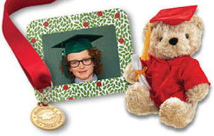

Graduation Supplies and Accessories
Remember graduation day with these supplies and accessories for kindergarten, preschool and elementary students. T-shirts and wristbands proclaim they are a graduate, while ribbons and medals show achievement. Turn graduation into an art project with the new create-a-cap where students decorate and assemble their own hat. A huggable bear makes a great graduation gift and is always a reminder of the big celebration.
Don’t forget about elementary graduation packages that save time and money.